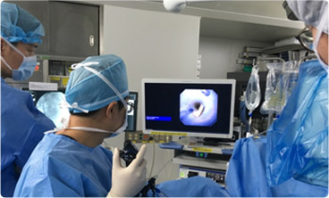
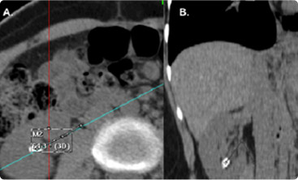

Becton, Dickinson
CASE SHARING
병원 소속 및 담당자
소속 :서울한국병원
성명 :김수철
수술케이스 환자 정보
-
나이 :
33세
-
성별 :
남성
-
상태 :
입력된 환자의 상태의 정보
-
기타 특이사항 :
기타 특이상항 내용이 노출
-
수술방법 :
RIRS
-
치료방법 :
내시경 수술
상병진단
연성요관내시경수술은 부드럽게 휘어지는
내시경을 요관에 삽입해 결석을 몸 밖으로
제거하는방식으로, 돌을 몸 밖으로 꺼내는
수술이기 때문에 한 번 시술로 90%이상의
치료 성공률을 보인다.
수술 프로세스
결석이 1cm 이상인 경우에는 자연배출이 어려우므로 쇄석술을 시도하고, 4mm 이하인 경우에는
자연배출을 유도합니다. 그러나 진통제로 통증이 조절되지 않거나, 요로감염, 발열 등이 동반되는
경우에는 크기가 작더라도 쇄석술을 시행하게 됩니다.
수술 이미지
- 
- 
의료진 총평
요로결석과 상부요로종양치료에 대한 신기술 중 하나인 연성 내시경 수술(RIRS)을 정리해 소개한
의의있는 논문이다. 요로결석은 평생유병률이 3.5%로 흔한 질환이다. 콩팥결석의 경우, 대표적인
치료법인 ESWL은 신하극 결석에 대한 성공률이 낮고, PCNL 수술은 전신마취를 해야하며 출혈경향이
있는 경우엔 금기인 단점이 있다. RIRS는 이런 단점을 극복할 수 있는 수술방법이다.
본 논문에서는 연성 내시경을 이용한 콩팥결석 수술의 적응증, 치료 성적, 수술 방법, 논의점 및 향후
전망을 정리하였다. 또한 콩팥 내 요로상피암의 치료에 대한 역할에 대해서도 소개하고 있다.
연성 내시경의 최소침습적인 특성으로 더 많은 환자들에게 혜택이 늘어나길 기대해본다.